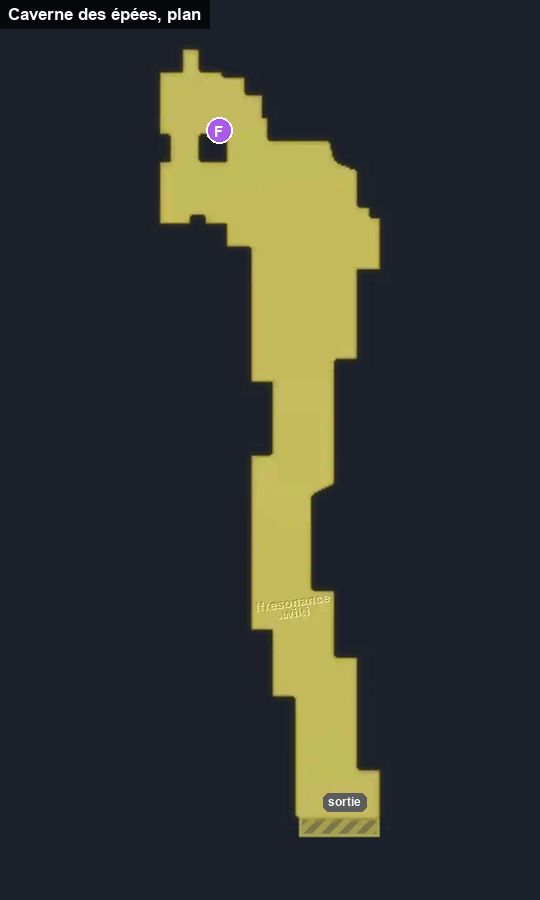

Partie 13
Les 33 quêtes annexes
L'essentiel
- Le compte : 33 quêtes annexes, dont 7 donnent une Vision et 8 donnent un bonus permanent de caractéristiques à un personnage précis.
- Ne rate pas les huit quêtes de personnage : chacune donne +100 PV, +30 PM et deux statistiques à son héros. Ce sont les meilleures récompenses annexes du jeu.
- Les chaînes : plusieurs quêtes en exigent une autre avant. Mécabo évolue demande Mécabo débarque !, Ô Général ! Mon Général ! demande L'appel lointain, Au bout du chemin demande Héritage.
- Avant de partir : aucune quête n'expire. Prends-les dès qu'elles apparaissent, finis-les quand ton niveau suit.
Objectif
Faire le tour des 33 quêtes annexes, et surtout savoir lesquelles comptent.
Elles ne sont pas toutes égales. Une dizaine donnent un Fragment de magilithe et quelques centaines de gils — sympathique, sans plus. Mais neuf donnent une Vision, huit donnent un bonus permanent de caractéristiques, et une donne l'Armure de Genji. Celles-là, il faut les faire.
Itinéraire
- 📍 La liste complète : les 33 quêtes annexes et leurs récompenses donnent le point de départ et la récompense de chacune, et la page française des quêtes annexes donne leurs noms français.
Il n'y a pas d'itinéraire unique : les quêtes se prennent partout, du chapitre 1 au chapitre 7. Trois repères suffisent.
Les villes de départ sont presque toujours celles du chapitre en cours : Grandshelt et Grandport au chapitre 1, Dilmagia au chapitre 2, Olderion au chapitre 3, Zoldaad au chapitre 4, Mysidia au chapitre 5, Gaberada au chapitre 6, Sian au chapitre 7.
Les étapes, elles, renvoient en arrière. Une quête prise à Gronoa peut te demander de retourner au Mont foudroyant. L'aéronef rend tout ça indolore, et c'est pour ça que le bon moment pour vider son journal est après le chapitre 5.
Rien n'expire. Une fois apparue, une quête t'attend aussi longtemps qu'il faut — y compris après le générique, grâce à la sauvegarde de fin de partie.
Déroulé pas à pas
- Prends chaque quête dès qu'elle apparaît, même si tu ne peux pas la finir. Certaines ne se terminent qu'au chapitre suivant, et le journal ne te les proposera pas deux fois.
- Vérifie les prérequis. Quatre chaînes existent, et une quête bloquée n'est presque jamais un bug :
- Mécabo évolue demande Mécabo débarque ! ;
- Ô Général ! Mon Général ! demande L'appel lointain ;
- Au bout du chemin demande Héritage ;
- Retrouvailles demande Virtuose elfique.
- Fais les trois manches de Mog perché à Mysidia est. Les récompenses montent : Maxi-brumipotion, puis Magilithe, puis Cristal de magilithe.
- Fais les huit quêtes de personnage en priorité. Chacune donne +100 PV, +30 PM et deux statistiques, en permanence, au héros concerné.
- Garde Combat sur le grand pont pour la fin. Elle demande d'avoir croisé Gilgamesh au Passage de la cascade, de le battre sur le pont de l'Entreprise, puis de traverser plusieurs ponts avec lui. La récompense est l'Armure de Genji, et la chaîne complète est dans la partie 20.
- Note le prérequis inhabituel de Fracture métallique : il faut que Fina ait appris son sort sacré — Holy en anglais ⚠️ nom français à vérifier en jeu. Ensuite, la stèle du Pourfendeur de pluie s'utilise.
- Vide ton journal après le chapitre 5, quand l'aéronef rend les allers-retours gratuits.
- Termine le reste avant la Tour de cristal, ou après le générique avec la sauvegarde de fin de partie. Les deux marchent.
Quêtes et lieux
Les 33 quêtes, dans l'ordre où le jeu les propose
| № | Quête | Où elle commence | Ce qu'elle demande | Récompense |
|---|---|---|---|---|
| 1 | Rêve idéaliste | Chapitre 1, après l'auberge de Grandshelt : le soldat de Grandshelt | Voir Scott au village de Kol, examiner le Temple de la Terre, battre Poison Flora | Flamberge, 500 gils |
| 2 | Secrets dévoilés | Boutique d'objets de Felicitas : Chloé | Visiter trois marqueurs bleus sur la mappemonde | Fragment de magilithe, chapelet de prière du moine |
| 3 | Le poids de la pitié | Après les scènes des ruines de Kolobos : le soldat de Grandport | Trouver Rolan, gagner le combat des ruines de Kolobos, faire son rapport | Iwakirimaru, 500 gils |
| 4 | Coup de main | Après l'obtention de Sirène : Zile, jetée ouest de Grandport | Battre quatre Piège humain, prévenir le cocher de chocobo | Fragment de magilithe, 500 gils |
| 5 | Virtuose elfique | Dilmagia : trouver Silvia | Examiner l'arbre clair du Mont foudroyant, puis retrouver Silvia à la Forge naine | Fragment de magilithe, 800 gils |
| 6 | Mécabo débarque ! | Après les scènes du chantier naval de Mobrise : se lance seule au retour à la Forge naine | Battre deux Ipooh, parler à Verun | Fragment de magilithe, le Mécabo réparé |
| 7 | Énigmes lyriques | Après les scènes de Mobrise : Roy, à la Forge naine | Examiner les portraits de Cid, parler au vieil homme du chantier de Dilmagia, revenir voir Roy | Fragment de magilithe, 800 gils |
| 8 | Mécabo évolue | Demande Mécabo débarque ! : Verun | Battre trois Chimère de Dhorme, trois Méduse, trois Destructeur et trois Ver des sables, avec un rapport après chaque série | Une Magilithe et de nouvelles compétences de Mécabo pour Lid à chaque étape |
| 9 | Mission médicinale | Après les scènes de la Grotte de l'eau : Sarah et Ilias, à Olderion | Obtenir le remède de trois façons au choix : battre le Dragon de sang, réunir ses ingrédients, ou l'acheter 50 000 gils | Fragment de magilithe, 1 500 gils |
| 10 | La marée céleste | Le soldat de la ville d'Amore | Battre les pirates, puis parler à une vieille femme à Olderion et à Mercedes au Passage de la cascade | Fragment de magilithe, 1 500 gils |
| 11 | L'appel lointain | Chapitre 4 : l'homme désespéré des résidences impériales de Zoldaad | Monter dans le Train fantôme, faire les choix de l'histoire, battre sa forme véritable | Vision Camille, Magilithe |
| 12 | Rebelle solitaire | Chapitre 4 : Simon, à la base des rebelles | Inspecter six plaques d'égout pour les fragments de code, puis trouver le marchand encapuchonné et choisir Rose sauvage | Magilithe, Diadème rose |
| 13 | Ô Général ! Mon Général ! | Demande L'appel lointain : Ozetta, à Zoldaad | Plusieurs lieux, dont l'usine d'armes, puis parler à Foxie | Vision Wilhelm, Cristal de magilithe |
| 14 | Volonté forgée | Dilmagia : la commère | Parler à plusieurs PNJ, puis donner les réponses finales à Aileen | Vision Aileen, Magilithe, et l'ouverture de la forge d'adamantite d'Aileen |
| 15 | À l'horizon | Le président du chantier naval de Dilmagia | Utiliser l'ascenseur du chantier de Mobrise, parler à Évan, battre Typhon | Chocobo Nitro ; Lid gagne +100 PV, +30 PM, +25 Force, +25 Magie |
| 16 | La mission de Nichol | Olderion : parler à Nichol | Plusieurs étapes au lac Dorr, battre le Sahuagin, passer à la Grotte de l'eau | Anneau enchanté ; Nichol gagne +100 PV, +30 PM, +30 Magie, +20 Vitesse. Et la Chimère Léviathan |
| 17 | Mog perché | Mysidia est : parler au mog et accepter de jouer | Attraper trois mogs flottants | Maxi-brumipotion |
| 18 | Deuxième manche de Mog perché | Demande Mog perché : le mog de Mysidia est | Attraper trois mogs de plus | Magilithe |
| 19 | Troisième manche de Mog perché | Demande la deuxième manche : le mog de Mysidia est | Attraper trois mogs de plus | Cristal de magilithe |
| 20 | Mécabo déchaîné | Première visite à Mysidia : Verun | Battre trois Mahadeva et trois Malbodoom, avec rapport à Verun à bord de l'aéronef | Cristal de magilithe et de nouvelles compétences de Mécabo pour Lid |
| 21 | Le retour de Victoria | Après les scènes du village de Sunioo : Victoria, au nord-est de Mysidia | Visiter la Grotte du tartarosaure et battre les Lézard noir | Vision Victoria, Magilithe |
| 22 | Héritage | Après les scènes du vieux château sans nom : dormir à l'auberge d'Olderion | Parler à l'informateur, prendre le train, inspecter deux endroits à la station de Kellis, parler à Shera | Pièce truquée ; Jake gagne +100 PV, +30 PM, +30 Force, +20 Endurance |
| 23 | Combat sur le grand pont | Demande d'avoir croisé Gilgamesh au Passage de la cascade | Le battre sur le pont de l'Entreprise, puis visiter plusieurs ponts et accepter de les traverser avec lui | Armure de Genji |
| 24 | Au bout du chemin | Demande Héritage : consulter la Gazette de Drofox à Zoldaad | Parler à Shera et à Amélia, puis reconsulter la gazette | Vision Amélia, Magilithe |
| 25 | Dernier répit | Chapitre 5 : l'archisorcière Fina, à Grandshelt | Visiter plusieurs lieux de Grandshelt, parler au roi, retrouver Fina à bord de l'aéronef | Anneau de clair de lune ; Fina gagne +100 PV, +30 PM, +30 Magie, +20 Force |
| 26 | Retrouvailles | Demande Virtuose elfique : Fryevia, à Gaberada | Trouver le chemin caché au nord de Sunioo, passer au Mont foudroyant, retrouver Silvia à la Forge naine | Magilithe, 2 500 gils |
| 27 | Reflets scintillants | Chapitre 6 : Fina, à Mysidia | Visiter la tour de Sirène, puis Olderion et le lac Dorr | Pendentif béni ; Fina gagne +100 PV, +30 PM, +30 Esprit, +20 Magie |
| 28 | Mysidia la florissante | Chapitre 6 : le garçon, à Mysidia | Vérifier la Bibliothèque arcanique, monter la Tour de Mysidia, visiter l'île et la pierre tombale | Amulette d'absorption magique ; Sakura gagne +100 PV, +30 PM, +30 Magie, +20 Esprit |
| 29 | Fracture métallique | Demande que Fina ait appris son sort sacré : la stèle du Pourfendeur de pluie | Battre l'Ombre d'Odin, puis parler au vieil homme du vieux château sans nom | La Chimère Odin |
| 30 | L'écu des faibles | Chapitre 7 : Charlotte, à Grandport | Visiter le château de Grandshelt, gagner le combat des ruines de Kolobos, parler à la mère à la Caverne des épées | Vision Charlotte, Cristal de magilithe |
| 31 | Les deux champions | Chapitre 7 : côté ouest de l'auberge de Gaberada | Battre Adamandelion sur l'île au nord du Temple de l'Eau, puis visiter la Caverne perdue | Blason critique ; Lasswell gagne +100 PV, +30 PM, +30 Force, +20 Vitesse |
| 32 | L'apprentie admirable | S'ouvre quand l'objectif du Mont Reizan arrive : Ayaka, à Sian | Entrer dans le Creux infernal par le vortex près du volcan de Zoldaad, battre l'ennemi, puis passer au Mont foudroyant | Vision Ayaka, Cristal de magilithe |
| 33 | Une nouvelle page | Chapitre 7 : Raegen, sur le pont de l'aéronef | Parler au roi et à une vieille femme à Mitra, puis suivre le Passage de la cascade jusqu'au bout | Médaillon du Chevalier ; Rain gagne +100 PV, +30 PM, +30 Endurance, +20 Force |

Gare de Kellis, plan — ? : objet à examiner

Caverne des épées, plan — F : fragment de tablette
⚠️ Les quêtes 18 et 19 sont les deux suites de Mog perché, et on les compte tantôt comme une seule quête en trois manches, tantôt comme trois quêtes distinctes. Seule la première a un nom français connu. Dans les deux cas, le contenu est identique : trois parties de chat, trois récompenses croissantes.
Les huit quêtes de personnage
Ce sont les plus rentables du jeu, et il n'y en a qu'une par héros. Chacune donne +100 PV et +30 PM, plus deux statistiques.
| Héros | Sa quête | Les deux statistiques | L'objet qui va avec |
|---|---|---|---|
| Rain | Une nouvelle page | +30 Endurance, +20 Force | Médaillon du Chevalier |
| Lasswell | Les deux champions | +30 Force, +20 Vitesse | Blason critique |
| Fina | Dernier répit | +30 Magie, +20 Force | Anneau de clair de lune |
| Fina, seconde quête | Reflets scintillants | +30 Esprit, +20 Magie | Pendentif béni |
| Lid | À l'horizon | +25 Force, +25 Magie | Chocobo Nitro |
| Nichol | La mission de Nichol | +30 Magie, +20 Vitesse | Anneau enchanté |
| Jake | Héritage | +30 Force, +20 Endurance | Pièce truquée |
| Sakura | Mysidia la florissante | +30 Magie, +20 Esprit | Amulette d'absorption magique |
Fina en a deux, et Lid est la seule dont les deux statistiques sont à +25 au lieu de +30 et +20. Dark Fina n'a pas de quête à son nom dans cette liste.
Les sept quêtes qui donnent une Vision
| Vision | Sa quête |
|---|---|
| Camille | L'appel lointain |
| Wilhelm | Ô Général ! Mon Général ! |
| Aileen | Volonté forgée |
| Victoria | Le retour de Victoria |
| Amélia | Au bout du chemin |
| Charlotte | L'écu des faibles |
| Ayaka | L'apprentie admirable |
Soit sept Visions par quête annexe, auxquelles s'ajoutent Tronn et Leah, offertes par l'histoire. Les 16 autres sont dans des sanctuaires, et Séphiroth se gagne au combat : partie 11.
Deux quêtes donnent autre chose que des Visions, et ce sont peut-être les deux plus importantes : Fracture métallique donne la Chimère Odin, et Combat sur le grand pont donne l'Armure de Genji.
Les quatre chaînes de quêtes
| Quête | Ce qu'elle exige d'abord |
|---|---|
| Mécabo évolue | Mécabo débarque ! |
| Ô Général ! Mon Général ! | L'appel lointain |
| Au bout du chemin | Héritage |
| Retrouvailles | Virtuose elfique |
Plus les deux suites de Mog perché, qui s'enchaînent dans l'ordre, et Combat sur le grand pont, qui demande d'avoir croisé Gilgamesh au Passage de la cascade.
La chaîne du Mécabo mérite un mot : trois quêtes — Mécabo débarque !, Mécabo évolue, Mécabo déchaîné — qui donnent à Lid de nouvelles compétences de Mécabo à chaque étape. C'est ce qui transforme son mécha d'un gadget de cinématique en vraie pièce d'équipe.
Les ennemis à battre, quête par quête
| Quête | Ce qu'il faut battre |
|---|---|
| Rêve idéaliste | Poison Flora |
| Coup de main | Quatre Piège humain |
| Mécabo débarque ! | Deux Ipooh |
| Mécabo évolue | Trois Chimère de Dhorme, trois Méduse, trois Destructeur, trois Ver des sables |
| Mission médicinale | Le Dragon de sang (ou ses ingrédients, ou 50 000 gils) |
| La marée céleste | Les pirates de la jetée nord-est d'Amore |
| L'appel lointain | Le Train fantôme, puis sa forme véritable |
| À l'horizon | Typhon |
| La mission de Nichol | Le Sahuagin du lac Dorr |
| Mécabo déchaîné | Trois Mahadeva, trois Malbodoom |
| Le retour de Victoria | Les Lézard noir de la Grotte du tartarosaure |
| Combat sur le grand pont | Gilgamesh, sur le pont de l'Entreprise |
| Fracture métallique | L'Ombre d'Odin |
| L'écu des faibles | Le combat des ruines de Kolobos |
| Les deux champions | Adamandelion, au nord du Temple de l'Eau |
| L'apprentie admirable | L'ennemi du Creux infernal |
Butin exhaustif
⚠️ Les noms d'objets ci-dessous sont à vérifier en jeu, sauf ceux signalés comme confirmés.
| Nom exact | Type | Où / comment l'obtenir | Utilité |
|---|---|---|---|
| Flamberge | Arme | Rêve idéaliste | Épée de début de jeu |
| Iwakirimaru | Arme, katana | Le poids de la pitié | Pour Lasswell, très tôt dans le jeu |
| Armure de Genji | Armure | Combat sur le grand pont | Le bout de la chaîne de Gilgamesh. Partie 20 |
| Diadème rose | Accessoire | Rebelle solitaire | Nom confirmé |
| Blason critique | Accessoire | Les deux champions | Favorise les critiques. Nom confirmé |
| Médaillon du Chevalier | Accessoire | Une nouvelle page | La récompense de la quête de Rain |
| Anneau de clair de lune | Accessoire | Dernier répit | La première quête de Fina |
| Pendentif béni | Accessoire | Reflets scintillants | La seconde quête de Fina |
| Amulette d'absorption magique | Accessoire | Mysidia la florissante | La quête de Sakura |
| Anneau enchanté | Accessoire | La mission de Nichol | La quête de Nichol |
| Pièce truquée | Accessoire | Héritage | La quête de Jake |
| Chapelet de prière du moine | Accessoire | Secrets dévoilés | Accessoire de début de jeu |
| Chocobo Nitro | Objet | À l'horizon | La quête de Lid |
| Maxi-brumipotion | Consommable | Mog perché, première manche | Gros soin de groupe |
| Le Mécabo réparé | Fonction | Mécabo débarque ! | Débloque le mécha de Lid |
| Compétences de Mécabo | Fonction | Mécabo évolue et Mécabo déchaîné | De nouvelles attaques pour Lid à chaque étape |
| Forge d'adamantite d'Aileen | Fonction | Volonté forgée | Ouvre la forge. Partie 18 |
| Fragment de magilithe | Objet d'éveil | Quêtes 2, 4, 5, 7, 9, 10 | Éveil 1 d'une Vision |
| Magilithe | Objet d'éveil | Quêtes 8, 11, 12, 14, 21, 24, 26, et la deuxième manche de Mog perché | Éveil 2 |
| Cristal de magilithe | Objet d'éveil | Quêtes 13, 20, 30, 32, et la troisième manche de Mog perché | Éveil 3 |
| Chimère Odin | Chimère | Fracture métallique | Partie 12 |
| Chimère Léviathan | Chimère | La mission de Nichol | Partie 12 |
| 2 500 gils | Argent | Retrouvailles | La plus grosse somme d'une quête annexe |
Conseils et pièges
Les huit quêtes de personnage avant tout le reste
Si tu ne fais que huit quêtes sur 33, fais celles-là. +100 PV, +30 PM et deux statistiques, en permanence, c'est l'équivalent de plusieurs niveaux gratuits — et ça se cumule avec les réponses de dialogue des chapitres, qui donnent elles aussi des statistiques permanentes.
Un ordre raisonnable : La mission de Nichol et À l'horizon tôt, parce qu'elles donnent aussi la Chimère Léviathan et le Chocobo Nitro ; Héritage et les deux de Fina au chapitre 5 ; Mysidia la florissante au chapitre 6 ; Les deux champions et Une nouvelle page au chapitre 7.
Prends tout, finis plus tard
Beaucoup de quêtes se prennent bien avant de pouvoir se finir. Secrets dévoilés envoie sur trois marqueurs de la mappemonde qu'on n'atteint pas tous au chapitre 1 ; Combat sur le grand pont traverse quatre chapitres.
La règle est simple : accepte tout ce qu'on te propose, et ne t'inquiète pas d'un journal encombré. Rien n'expire, et la sauvegarde de fin de partie te laisse même finir après le générique.
La chaîne du Mécabo change vraiment Lid
Trois quêtes : Mécabo débarque !, Mécabo évolue, Mécabo déchaîné. À chacune, Lid gagne de nouvelles compétences de Mécabo.
C'est le seul endroit du jeu où un personnage acquiert des capacités autrement que par les niveaux et les Visions. Sans ces trois quêtes, Lid reste un marteau sur pattes ; avec, elle devient la polyvalente du groupe — ce qui est pratique, parce que son élément naturel, la Terre, se heurte à beaucoup d'immunités en fin de jeu.
Mission médicinale a trois solutions, et une seule est raisonnable
Le remède s'obtient de trois façons : battre le Dragon de sang niveau 28 sans fuite possible, réunir ses ingrédients, ou l'acheter 50 000 gils.
Au chapitre 3, 50 000 gils sont hors de portée, et le Dragon de sang est largement au-dessus de ton niveau. Prends les ingrédients. Et si tu reviens plus tard avec l'aéronef, le dragon devient une formalité et tu gagnes du temps.
Rebelle solitaire demande de fouiller les égouts
Six plaques d'égout à inspecter pour autant de fragments de code, puis un marchand encapuchonné et un choix à faire — Rose sauvage. C'est la quête la plus facile à abandonner à mi-chemin, parce que rien n'indique combien de plaques il reste.
Six. Compte-les.
Alertes
- ⏳ Fracture métallique exige que Fina ait appris son sort sacré avant que la stèle du Pourfendeur de pluie réagisse. C'est le seul prérequis de ce genre dans le jeu, et il bloque la Chimère Odin — donc Bahamut.
- ⏳ Quatre quêtes en exigent une autre : Mécabo évolue après Mécabo débarque !, Ô Général ! Mon Général ! après L'appel lointain, Au bout du chemin après Héritage, et Retrouvailles après Virtuose elfique.
Check-list
- Les 8 quêtes de personnage faites : Rain, Lasswell, Fina ×2, Lid, Nichol, Jake, Sakura
- Les 7 Visions de quête obtenues
- Chimère Odin par Fracture métallique
- Chimère Léviathan par La mission de Nichol
- Armure de Genji par Combat sur le grand pont
- La chaîne du Mécabo terminée : débarque, évolue, déchaîné
- Les trois manches de Mog perché gagnées
- Forge d'Aileen ouverte par Volonté forgée
- Les 4 chaînes de prérequis respectées
- Journal de quêtes vidé avant la Tour de cristal, ou après le générique